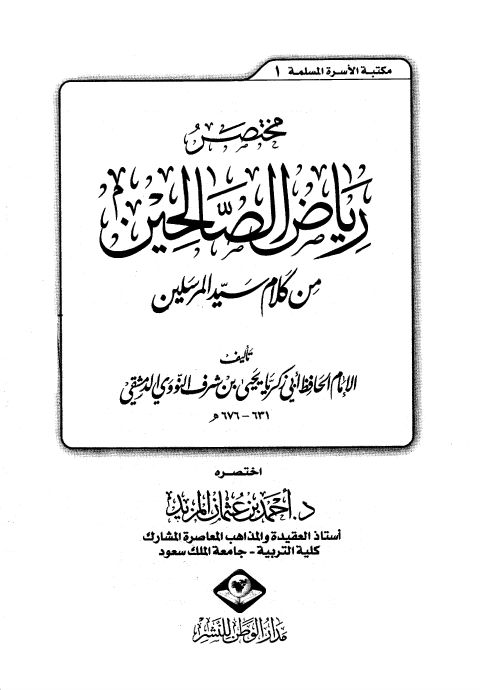
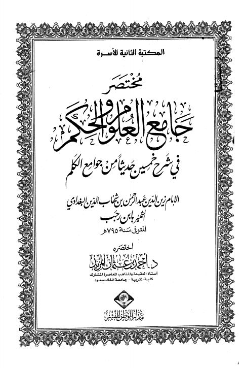

Authors
أحمد عثمان المزيد
Author
Resources

مختصر رياض الصالحين- المزيد
مختصر رياض الصالحين- المزيد
يحيى بن شرف النووي

مختصر جامع العلوم والحكم في شرح خمسين حديثًا من جوامع الكلم لابن رجب
مختصر جامع العلوم والحكم في شرح خمسين حديثًا من جوامع الكلم لابن رجب
عبد الرحمن البغدادي بن رجب الحنبلي